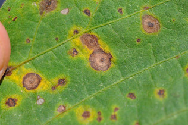
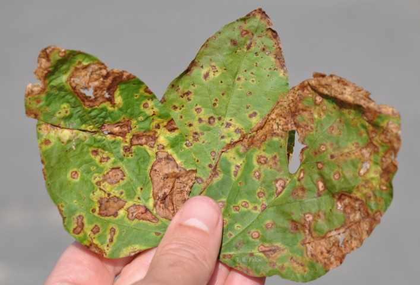
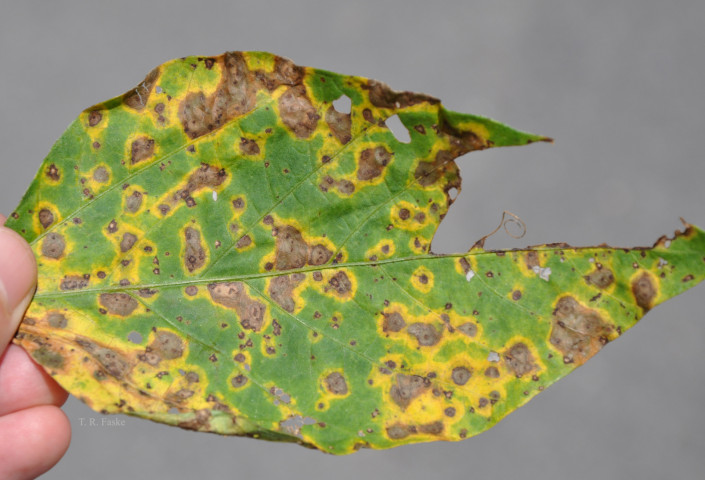

Diseases
Foliar
Aerial web blight
| Name | Aerial web blight |
| Importance | medium |
| Alternative name | Aerial blight, Rhizoctonia aerial blight |
| Pathogen | Rhizoctonia solani |
| Geographical range | Southern U.S. |
| Stage start | R1 |
| Stage end | R6 |
| Descriptions | Commonly infects soybeans in rotation with rice (sheath blight in rice). High temperatures, heavy dew, and high humidity/rainfall favor Aerial web blight development. More likely in fields with narrow row spacing. Sclerotia and mycelia survive in soil and crop residue. |
| Symptoms | A web of mycelium forms on leaves when they are wet. Leaves stick together, wilt, and become tattered. Dark brown sclerotia 1-5 mm long may be present plant tissue. Leaves with reddish-brown margins, erly leaf drop, or pod abortion. Wilted leaves and delayed maturity. |
| Where | Lower to middle canopy, working upward |
| Citation | Mueller, D., Wise, K., Sisson, A., Smith, D., Sikora, E., Bradley, C., and Roberston, A. 2016. A Farmer’s Guide to Soybean Diseases. The American Phytopathological Society. |


Bacterial blight
| Name | Bacterial blight |
| Importance | medium |
| Pathogen | Pseudomonas syringae sub. glycines |
| Geographical range | Midwest/Eastern U.S. |
| Stage start | V1 |
| Stage end | R6 |
| Descriptions | Common during wet weather or in irrigated fields. |
| Symptoms | Dark spots often with yellow halo. Lesions coalesce. |
| Where | Upper canopy |
| Citation | Mueller, D., Wise, K., Sisson, A., Smith, D., Sikora, E., Bradley, C., and Roberston, A. 2016. A Farmer’s Guide to Soybean Diseases. The American Phytopathological Society. |


Bacterial pustule
| Name | Bacterial pustule |
| Importance | low |
| Pathogen | Xanthomonas axonopodis pv. glycines |
| Geographical range | Midwest/Eastern U.S. |
| Stage start | v5 |
| Stage end | R6 |
| Descriptions | Development is favored in wet/rainy or humid conditions and warm or hot temperatures. Sporadic and unlikely to cause yield loss. Could be confused with bacterial blight, Spetoria brown spot, or soybean rust. Overwinters in crop residue and on seed. Transmitted by seed, wind, rain, or machinery. |
| Symptoms | Foliar lesions begin as small light green spots with yellow halos. Lesions turn brown at the center and raised pustules appear on the leaf surface. |
| Where | Upper canopy |
| Citation | https://www.ag.ndsu.edu/publications/crops/soybean-disease-diagnostic-series#section-17 https://soybeanresearchinfo.com/soybean-disease/bacterial-pustule/ |


Cercospora leaf blight
| Name | Cercospora leaf blight |
| Abbr | CLB |
| Importance | medium |
| Pathogen | Cercospora kikuchii |
| Geographical range | Midwest/Eastern U.S. |
| Stage start | VC |
| Stage end | R8 |
| Descriptions | Warm, humid weather. |
| Symptoms | Bronzing of leaves in upper canopy. |
| Where | Upper canopy, leaves exposed to sunlight |
| Citation | Mueller, D., Wise, K., Sisson, A., Smith, D., Sikora, E., Bradley, C., and Roberston, A. 2016. A Farmer’s Guide to Soybean Diseases. The American Phytopathological Society. |


Downy mildew
| Name | Downy mildew |
| Importance | medium |
| Pathogen | Peronospora manshurica |
| Geographical range | Midwest/Eastern U.S. |
| Stage start | V5 |
| Stage end | R6 |
| Descriptions | Weather dependent disease. Favored by cool, wet weather. Younger leaves are more susceptible. |
| Symptoms | Small, irregularly shaped lesions on the upper surfaces of leaves. Pale-green to light-yellow spots turn to yellow spots. Fuzzy gray tufts on the underside of infected leaves. |
| Where | Young leaves |
| Citation | Mueller, D., Wise, K., Sisson, A., Smith, D., Sikora, E., Bradley, C., and Roberston, A. 2016. A Farmer’s Guide to Soybean Diseases. The American Phytopathological Society. |


Frogeye leafspot
| Name | Frogeye leafspot |
| Abbr | FELS |
| Importance | high |
| Pathogen | Pseudomonas syringae sub. glycines |
| Geographical range | Midwest/Eastern U.S. |
| Stage start | R2 |
| Stage end | R6 |
| Descriptions | Warm, humid weather. New leaves are susceptible. |
| Symptoms | Round, tan lesions with a reddish-purple border. |
| Where | Mid to upper canopy |
| Citation | Mueller, D., Wise, K., Sisson, A., Smith, D., Sikora, E., Bradley, C., and Roberston, A. 2016. A Farmer’s Guide to Soybean Diseases. The American Phytopathological Society. |


Phyllosticta leaf spot
| Name | Phyllosticta leaf spot |
| Importance | low |
| Pathogen | Phyllosticta sojicola |
| Geographical range | Midwest/Eastern U.S. |
| Stage start | V5 |
| Stage end | R6 |
| Descriptions | More common in cool temperatures, wet conditions, or short crop rotations. Transmitted through infected seed. Does not typically impact yield. Could beconfused with frogeye leafspot or Septoria brown spot. |
| Symptoms | Leaf lesions begin as light green spots. Lesions become gray to tan with narrow dark purple to brown margin. Lesion shape is oval, circular, or irregular/V-shaped. Small black pycnidia (fungal specks) may be present in lesion center. Lesions may be present on petioles, stems, and pods. Necrotic holes in tissue may form at the center of lesions. |
| Where | Upper leaf surface |
| Citation | https://cropprotectionnetwork.org/encyclopedia/phyllosticta-leaf-spot-of-soybean https://www.ag.ndsu.edu/publications/crops/soybean-disease-diagnostic-series#section-22 |


Powdery mildew
| Name | Powdery mildew |
| Abbr | PM |
| Importance | low |
| Pathogen | Erysiphe diffusa |
| Geographical range | Midwest/Eastern U.S. |
| Stage start | R3 |
| Stage end | R7 |
| Descriptions | When development occurs early in the season, yield losses may occur. Develops in cool conditions, <75°F (24°C), and low humidity levels. Most severe in late-planted soybeans. |
| Symptoms | White, powdery fungal mycelial growth on leaves and all aboveground parts. White fungal growth in small, irregular areas, until growing together. Tiny black chasmothecia may be present on the underside of leaves. Yellowing and vein necrosis may also develop. Seeds may be shriveled or not fully developed. |
| Where | Upper leaf surfaces, petioles, and stems |
| Citation | Mueller, D., Wise, K., Sisson, A., Smith, D., Sikora, E., Bradley, C., and Roberston, A. 2016. A Farmer’s Guide to Soybean Diseases. The American Phytopathological Society. |


Septoria brown spot
| Name | Septoria brown spot |
| Importance | high |
| Alternative name | Brown spot, Septoria leaf spot |
| Pathogen | Septoria glycines |
| Geographical range | Eastern U.S. |
| Stage start | V1 |
| Stage end | R6 |
| Descriptions | Survives on residues. |
| Symptoms | Brown spots on lower leaves. Followed by yellowing and leaf drop. |
| Where | Lower leaves |
| Citation | Mueller, D., Wise, K., Sisson, A., Smith, D., Sikora, E., Bradley, C., and Roberston, A. 2016. A Farmer’s Guide to Soybean Diseases. The American Phytopathological Society. |


Soybean rust
| Name | Soybean rust |
| Importance | low (in U.S.) |
| Pathogen | Phakopsora pachyrhizi; P. meibomiae |
| Geographical range | Southern U.S. |
| Stage start | R1 |
| Stage end | R7 |
| Descriptions | Pustules may produce spores for several weeks. Cool, wet weather and high relative humidity are favorable conditions. Early season infection casues premature defoliation, reduced pod and seed number. |
| Symptoms | Small grayish lesions to begin. Later tan or reddish-brown spot approximately 5 mm in diameter. Mature lesions contain small pustules, usually on the lower leaf surface. |
| Where | Initially in the lower canopy after canopy closure |
| Citation | Mueller, D., Wise, K., Sisson, A., Smith, D., Sikora, E., Bradley, C., and Roberston, A. 2016. A Farmer’s Guide to Soybean Diseases. The American Phytopathological Society. |


Target spot
| Name | Target spot |
| Importance | low |
| Pathogen | Corynespora cassiicola |
| Geographical range | Southern U.S. |
| Stage start | V1, R3 |
| Stage end | V2, R6 |
| Descriptions | Wet conditions and cool soil temperatures are favorable. The fungus survives on plant residue and has a wide host range. |
| Symptoms | Forms reddish-brown lesions on leaves, often with yellow halos. Tiny spots/esions occur on stems and petioles. Small, sunken and dark lesions occur on pods. |
| Where | Infects nearly all plant parts |
| Citation | Mueller, D., Wise, K., Sisson, A., Smith, D., Sikora, E., Bradley, C., and Roberston, A. 2016. A Farmer’s Guide to Soybean Diseases. The American Phytopathological Society. |


Wildfire
| Name | Wildfire |
| Importance | low |
| Pathogen | Pseudomonas syringae pv. tabaci |
| Geographical range | Southern U.S. |
| Stage start | V5 |
| Stage end | R6 |
| Descriptions | Favored in wet and warm conditions. Survives on crop residue, seed, and alternative hosts. Inoculum can be spread by splashing water and rain. |
| Symptoms | Foliar lesions that are light-dark brown up to 1/2 inch (12 mm) in diameter. Wide yellow halos which streak across the leaf tissue. Dead spots in the lesions fall away and begin to look tattered or even cause defoliation. |
| Where | Leaves |
| Citation | https://www.plantdiseases.org/wildfire-soybean-0 |



Root_Stem
Anthracnose stem blight
| Name | Anthracnose stem blight |
| Abbr | ASB |
| Importance | medium |
| Pathogen | Colletotrichum truncatum |
| Geographical range | Midwest/Eastern U.S. |
| Stage start | R2 |
| Stage end | R7 |
| Descriptions | ASB causes damage when present early in the season. Warm, wet weather favors infection and development of ASB during bloom and pod development. The fungus survives the winter in crop residue and on infected seed. |
| Symptoms | Irregularly shaped red-dark brown blotches on stems and petioles in early reproductive stages. Petiole infection may results in a shepherd’s crook and premature defoliation. Foliar symptoms are reddish veins, leaf rolling, and premature defoliation. Pods may become empty. Signs include small black fungal bodies visible on stems, petioles, and pods. Seeds ay be infected and show gray or brown spots with black specks. |
| Where | stem and foliar during R5-R7 |
| Citation | Mueller, D., Wise, K., Sisson, A., Smith, D., Sikora, E., Bradley, C., and Roberston, A. 2016. A Farmer’s Guide to Soybean Diseases. The American Phytopathological Society. |


Brown stem rot
| Name | Brown stem rot |
| Importance | high |
| Pathogen | Cadophora gregata, Phialophora gregata |
| Geographical range | North Central U.S. |
| Stage start | R1 |
| Stage end | R6 |
| Descriptions | Infection of the roots. Easily confused with sudden death syndrome. |
| Symptoms | Yellowing and browning between leaf veins. Browning of the inner pith tissue. |
| Where | Browning of the inner pith tissue of the lower stem |
| Citation | Mueller, D., Wise, K., Sisson, A., Smith, D., Sikora, E., Bradley, C., and Roberston, A. 2016. A Farmer’s Guide to Soybean Diseases. The American Phytopathological Society. |


Charcoal rot
| Name | Charcoal rot |
| Importance | high |
| Pathogen | Macrophomina phaseolina |
| Geographical range | Midwest/Eastern U.S. |
| Stage start | R3 |
| Stage end | R8 |
| Descriptions | Disease more common in dry years or dry regions . Starts as premature yellowing followed by wilting and plant death . Survives in the soil as microsclerotia. |
| Symptoms | Small, hard, black microsclerotia in root and stem tissue. Patches of wilted plants. |
| Where | Buildup of black microsclerotia visible near season end on and in stem |
| Citation | Mueller, D., Wise, K., Sisson, A., Smith, D., Sikora, E., Bradley, C., and Roberston, A. 2016. A Farmer’s Guide to Soybean Diseases. The American Phytopathological Society. |


Fusarium root rot and wilt
| Name | Fusarium root rot and wilt |
| Importance | high |
| Pathogen | Fusarium spp. |
| Geographical range | Midwest/Eastern U.S. |
| Stage start | VE |
| Stage end | R5 |
| Descriptions | Causes pre- and postermegence damping off. Young plants are at the greatest risk of root rot. |
| Symptoms | Discolored reddish-brown to dark-brown roots. Poorly developed roots with poor nodulation. Stunted and week seedlings. Plant wilting. |
| Where | Seedlings |
| Citation | Mueller, D., Wise, K., Sisson, A., Smith, D., Sikora, E., Bradley, C., and Roberston, A. 2016. A Farmer’s Guide to Soybean Diseases. The American Phytopathological Society. |


Phytophthora root rot and stem rot
| Name | Phytophthora root rot and stem rot |
| Importance | high |
| Pathogen | Phytophthora sojae |
| Geographical range | Midwest/Northeastern U.S. |
| Stage start | VE |
| Stage end | R5 |
| Descriptions | Occurs most commonly in poorly drained soils. Older infections may be confused with other stem diseases. |
| Symptoms | Early season seed rot and pre- and postemergence dampling-off. Water-soaked stems. Leaves chlorotic and plants my wilt/die. Dark brown lesion on the lower stem that extends up from the taproot. |
| Where | Seedlings and stems of older plants |
| Citation | Mueller, D., Wise, K., Sisson, A., Smith, D., Sikora, E., Bradley, C., and Roberston, A. 2016. A Farmer’s Guide to Soybean Diseases. The American Phytopathological Society. |


Pythium seedling blight and root rot
| Name | Pythium seedling blight and root rot |
| Importance | low |
| Pathogen | Pythium aphanidermatum |
| Geographical range | Midwest/Eastern U.S. |
| Stage start | VE |
| Stage end | V4 |
| Descriptions | Impacts single plants or patches within fields. |
| Symptoms | Pre- or postemergence damping-off. Infected seedlings have water-soaked lesions. Soft, brownish-colored rotting tissue. Rotted roots cause older plants to become yellow or wilted. |
| Where | Seedlings and roots of older plants |
| Citation | Mueller, D., Wise, K., Sisson, A., Smith, D., Sikora, E., Bradley, C., and Roberston, A. 2016. A Farmer’s Guide to Soybean Diseases. The American Phytopathological Society. |

Red crown rot
| Name | Red crown rot |
| Importance | low |
| Pathogen | Calonectria ilicola |
| Geographical range | Southern U.S. |
| Stage start | R3 |
| Stage end | R7 |
| Descriptions | May occur in patches or single plants. Survives as microsclerotia in the soil or crop residue over winter and invades roots in the spring. |
| Symptoms | Red, sunken lesions occur on the plant immediately above the soil line. Red-orange spots (perithecia) present on the lower stem near the soil line. Foliar symptoms only observed later in the reproductive stages. Upper leaves show yellow spots between veins. Later leaves display large, chlorotic areas between veins, with green veins. Petioles eventually drop off the plant. |
| Where | Stem at the soil line |
| Citation | Mueller, D., Wise, K., Sisson, A., Smith, D., Sikora, E., Bradley, C., and Roberston, A. 2016. A Farmer’s Guide to Soybean Diseases. The American Phytopathological Society. |


Rhizoctonia seedling blight and root rot
| Name | Rhizoctonia seedling blight and root rot |
| Importance | low |
| Alternative name | Rhizoctonia root rot |
| Pathogen | Rhizoctonia solani |
| Geographical range | Midwest/Eastern U.S. |
| Stage start | VE |
| Stage end | V5 |
| Descriptions | Warm and moist soil while plants are in early vegetative stages. Delayed planting in spring due to rain. High soil organic matter. Plant stress due to physical or chemical/herbicide injury. Causes most damage during early vegetative growth stages. |
| Symptoms | Rusty-brown, dry, sunken lesions on lower parts of stems. Dark brown lesions than girdle the stems near the soil. Plants stunted, yellow, and wilting. |
| Where | Crown, stem of seedlings |
| Citation | https://www.ag.ndsu.edu/publications/crops/soybean-disease-diagnostic-series#section-4 |


Root-knot nematode
| Name | Root-knot nematode |
| Abbr | RKN |
| Importance | low |
| Pathogen | Meloidogyne spp. |
| Geographical range | Southeast U.S. |
| Stage start | V5 |
| Stage end | R6 |
| Descriptions | Several species of nematode present in Southern U.S, with M. aremaria present in peanut/soy rotation. Northern RKN not known to cause economic damage in soybean. Commonly found in sandy soils and in drought conidtions. Common weed/crop species (dandelion, purslane, cotton, and peanut) are also hosts. Cultivation and movement of soil can spread nematodes. Infected plants are more susceptible to other diseases, like Fusarium wilt. |
| Symptoms | Symptoms appear in patches. Plants appear to have reduced vigor and are wilting, yellowing and stutned/plant death. Canopies are often not completely closed. Underground symptoms include large galls on the roots. |
| Where | Roots, canopy |
| Citation | Mueller, D., Wise, K., Sisson, A., Smith, D., Sikora, E., Bradley, C., and Roberston, A. 2016. A Farmer’s Guide to Soybean Diseases. The American Phytopathological Society. |


Southern blight
| Name | Southern blight |
| Importance | low |
| Alternative name | Sclerotium blight |
| Pathogen | Sclerotium rolfsii |
| Geographical range | Southeast U.S. |
| Stage start | R1 |
| Stage end | R6 |
| Descriptions | Hot temperatures are favorable (>80°F, 27°C) and drought conditions with sandy soils, high organic matter. Can infect high numbers of plants within one field. Survives as sclerotia, tan-red-brown structures, over winter. |
| Symptoms | Wilting and plant death. Stem near the soil surface reveals dark lesion and white fungal growth. |
| Where | Lower stem |
| Citation | Mueller, D., Wise, K., Sisson, A., Smith, D., Sikora, E., Bradley, C., and Roberston, A. 2016. A Farmer’s Guide to Soybean Diseases. The American Phytopathological Society. |


Soybean Cyst Nematode
| Name | Soybean Cyst Nematode |
| Abbr | SCN |
| Importance | high |
| Pathogen | Heterodera glycines |
| Geographical range | Midwest/Eastern U.S. |
| Stage start | V5 |
| Stage end | R6 |
| Descriptions | Patches in the field . The SCN can survive in the soil in protective cyst for many years. High pH soils, dry and sandy conditions may favor SCN. |
| Symptoms | Aboveground symptoms may not appear for years. Stunting, chlorosis, and delayed canopy closure. Tiny, lemon-shaped, white females attached to roots 1.5 months after soybean planting. |
| Where | Look for white to yellow females on roots, but often no visible aboveground symptoms |
| Citation | Mueller, D., Wise, K., Sisson, A., Smith, D., Sikora, E., Bradley, C., and Roberston, A. 2016. A Farmer’s Guide to Soybean Diseases. The American Phytopathological Society. |


Stem canker
| Name | Stem canker |
| Importance | medium |
| Pathogen | Diaporthe phaseolorum var. caulivora; Diaporthe aspalathi |
| Geographical range | Midwest/Eastern U.S. |
| Stage start | R2 |
| Stage end | R7 |
| Descriptions | Occurs in patches within fields or affects entire fields. Extended wet eather early in the season is favorable for development. Fungi survive in residue and soil for years and spores are splashed onto plants. |
| Symptoms | Initially small, reddish-brown lesions on lower part of the stem Lesions expand longitudinally and form cankers that girdle the stem. Interveinal chlorosis and necrosis, plant death. |
| Where | Lower stem |
| Citation | Mueller, D., Wise, K., Sisson, A., Smith, D., Sikora, E., Bradley, C., and Roberston, A. 2016. A Farmer’s Guide to Soybean Diseases. The American Phytopathological Society. |


Sudden death syndrome
| Name | Sudden death syndrome |
| Abbr | SDS |
| Importance | high |
| Pathogen | Fusarium virguliforme |
| Geographical range | Midwest/Eastern U.S. |
| Stage start | V1, R2 |
| Stage end | V2, R6 |
| Descriptions | Infection of the roots. Seedlings susceptible . Fungal structures on taproot. |
| Symptoms | Yellowing and browning between leaf veins . Discoloration of vascular tissue. Light gray to brown taproot. |
| Where | Low or compacted ares look for mottled leaves and infected taproot |
| Citation | Mueller, D., Wise, K., Sisson, A., Smith, D., Sikora, E., Bradley, C., and Roberston, A. 2016. A Farmer’s Guide to Soybean Diseases. The American Phytopathological Society. |


Taproot Decline
| Name | Taproot Decline |
| Importance | low |
| Pathogen | Xylaria arbuscula |
| Geographical range | Southern U.S. |
| Stage start | V6 |
| Stage end | R6 |
| Descriptions | Overwinters on plant residue. New within the last 15 years. |
| Symptoms | Interveinal chlorosis and necrosis. Blackened tap and lateral roots. Some seedlings and smaller vegetative plants may die-off. White myeclial growth in pith near the crown may be present along with vascular staining. |
| Where | Leaves in lower canopy early and entire canopy by R5 |
| Citation | Mueller, D., Wise, K., Sisson, A., Smith, D., Sikora, E., Bradley, C., and Roberston, A. 2016. A Farmer’s Guide to Soybean Diseases. The American Phytopathological Society. |


Thielaviopsis root rot
| Name | Thielaviopsis root rot |
| Importance | low |
| Alternative name | Black root rot |
| Pathogen | Thielaviopsis basicola |
| Geographical range | Midwest U.S. |
| Stage start | VE |
| Stage end | V2 |
| Descriptions | Occurs on soybeans after the reproductive growth stages begin until harvest. Typically does not cause much yield loss. |
| Symptoms | Irregualry shape, red to dark-brown spots on the stems and petioles. Infection of the petioles may cause a shepherd’s crook or premature defoliation. Leaves show red discoloration of veins, leaf rolling, and premature defoliation. Young pods can have smaller or no seeds. Additional signs include small balck spines and spores on stems, petioles, and pods. Seeds may show brown discoloration and have gray-black specks. |
| Citation | Mueller, D., Wise, K., Sisson, A., Smith, D., Sikora, E., Bradley, C., and Roberston, A. 2016. A Farmer’s Guide to Soybean Diseases. The American Phytopathological Society. |


White mold (Sclerotinia stem rot)
| Name | White mold (Sclerotinia stem rot) |
| Abbr | WM |
| Importance | high |
| Alternative name | Sclerotinia stem rot |
| Pathogen | Sclerotinia sclerotiorum |
| Geographical range | North Central U.S. |
| Stage start | R5 |
| Stage end | R7 |
| Descriptions | Cool, wet weather. Check for apothecia on sclerotia at the soil surface. Common in fields with dense canopies and narrow rows. Sclerotia remain in the soil for multiple years. |
| Symptoms | Wilted, dying plants in patches in the field. White, fuzzy mycelial growth on the stem. Black sclerotia on/in the stem and pods. |
| Where | Stem and pods |
| Citation | Mueller, D., Wise, K., Sisson, A., Smith, D., Sikora, E., Bradley, C., and Roberston, A. 2016. A Farmer’s Guide to Soybean Diseases. The American Phytopathological Society. |
/1.jpg)
/2.jpg)
/3.jpg)
/4.jpg)
Seed_and_Pod
Phomopsis seed decay
| Name | Phomopsis seed decay |
| Importance | medium |
| Pathogen | Diaporthe longicolla |
| Geographical range | Midwest/Eastern U.S. |
| Stage start | R6 |
| Stage end | R8 |
| Descriptions | Associated with stem decays. Colonization of seed. Especially present during delayed harvest. |
| Symptoms | Infected seeds are cracked, shrivelled, and have a chalky, white appearance. If infected seeds are planted, seedlings may have red-brown lesions on stems. Thin black lines may be present on lower internal portions of seedling stems. |
| Where | On seed and in pods |
| Citation | Mueller, D., Wise, K., Sisson, A., Smith, D., Sikora, E., Bradley, C., and Roberston, A. 2016. A Farmer’s Guide to Soybean Diseases. The American Phytopathological Society. |


Pod and stem blight
| Name | Pod and stem blight |
| Importance | medium |
| Pathogen | Diaporthe phaseolorum var. sojae |
| Geographical range | Midwest/Eastern U.S. |
| Stage start | R5 |
| Stage end | R8 |
| Descriptions | Wet weather nearing harvest increases disease. Can increase risk of seed decays. |
| Symptoms | Black fungal specks in linear rows on the stems of mature soybean plants (pycnidia). Infected seedlings may have reddish-brown streaks near the soil line. |
| Where | On stem, pods, petioles, nodes, or seeds |
| Citation | Mueller, D., Wise, K., Sisson, A., Smith, D., Sikora, E., Bradley, C., and Roberston, A. 2016. A Farmer’s Guide to Soybean Diseases. The American Phytopathological Society. |


Purple seed stain
| Name | Purple seed stain |
| Importance | low |
| Pathogen | Cercospora kikuchii |
| Geographical range | Midwest/Eastern U.S. |
| Stage start | VC |
| Stage end | R8 |
| Descriptions | Purple discoloration of seed. Related to CLB. Warm, humid weather favors infection. |
| Symptoms | Distinct pink to dark-purple discoloration of seeds in small spots or entire seed surface. |
| Where | On seed |
| Citation | Mueller, D., Wise, K., Sisson, A., Smith, D., Sikora, E., Bradley, C., and Roberston, A. 2016. A Farmer’s Guide to Soybean Diseases. The American Phytopathological Society. |


Viral
Alfalfa mosaic
| Name | Alfalfa mosaic |
| Importance | low |
| Pathogen | Alfalfa mosaic virus |
| Geographical range | Midwest/Eastern U.S. |
| Stage start | V3 |
| Stage end | R6 |
| Descriptions | More common in field borders and in fields near waterways. Alternative hosts are other legume crops, solanaceous crops. Can be transmitted by seed. Main vectors are aphids (15 different species, including soybean aphid). |
| Symptoms | Symptoms appear anytime during the growing season. Leaves are mottled in appearance ranging from bright yellow and dark green colors. Stunted plant growth. Seed coat NOT mottled. |
| Where | Leaves, overall growth |
| Citation | Mueller, D., Wise, K., Sisson, A., Smith, D., Sikora, E., Bradley, C., and Roberston, A. 2016. A Farmer’s Guide to Soybean Diseases. The American Phytopathological Society. |
Bean pod mottle
| Name | Bean pod mottle |
| Importance | medium |
| Pathogen | Bean pod mottle virus (Comovirus) |
| Geographical range | Midwest/Eastern U.S. |
| Stage start | R1 |
| Stage end | R6 |
| Descriptions | Favorable conidtions are during rapid plant growth and cool temperatures. Vectored by bean leaf beetles. Other sources are by perennial weed host and infected seed. |
| Symptoms | Yellow and green mottled areas on leaves. Leaves puckered, blistered, or distorted. Decreased pod size and number. |
| Where | Leaves, pods, and seeds |
| Citation | Mueller, D., Wise, K., Sisson, A., Smith, D., Sikora, E., Bradley, C., and Roberston, A. 2016. A Farmer’s Guide to Soybean Diseases. The American Phytopathological Society. |


Soybean mosaic
| Name | Soybean mosaic |
| Importance | medium |
| Pathogen | Soybean mosaic virus (Potyvirus) |
| Geographical range | Midwest/Eastern U.S. |
| Stage start | R1 |
| Stage end | R6 |
| Descriptions | Concern is mostly reduced seed quality. Cool temperatures and high aphid populations lead to increased infection. Spread is primarily from planting infected seed. |
| Symptoms | Mosaic patterns with light and green areas on leaves. Chlorosis, lesions, and puckered/curled leaves. |
| Where | Young and rapidly growing leaves |
| Citation | Mueller, D., Wise, K., Sisson, A., Smith, D., Sikora, E., Bradley, C., and Roberston, A. 2016. A Farmer’s Guide to Soybean Diseases. The American Phytopathological Society. |


Soybean vein necrosis
| Name | Soybean vein necrosis |
| Abbr | SVNV |
| Importance | medium |
| Pathogen | Soybean Vein Necrosis Virus |
| Geographical range | Midwest/Eastern U.S. |
| Stage start | R1 |
| Stage end | R6 |
| Descriptions | Anywhere in canopy. Transmitted by thrips . Drier years favor thrips. |
| Symptoms | Yellow lesions begin near leaf veins. Lesions form red-brown spots/patches (1/4-1/2 inch in diameter). Death of plant tissue. |
| Where | Generally along major leaf veins |
| Citation | Mueller, D., Wise, K., Sisson, A., Smith, D., Sikora, E., Bradley, C., and Roberston, A. 2016. A Farmer’s Guide to Soybean Diseases. The American Phytopathological Society. |


Tobacco ringspot virus
| Name | Tobacco ringspot virus |
| Importance | low |
| Pathogen | Nepovirus |
| Geographical range |
|
| Stage start | R3 |
| Stage end | R8 |
| Descriptions | Warm, dry weather favors disease development. Transmitted by infected seed and sometimes insect and nematode vectors. |
| Symptoms | Leaf distortion and discoloration. Distorted and lesions on the petioles. Stems may display shepherd’s crooking. Dead and brittle flowers and buds. |
| Where | End of the stems, leaves, and buds |
| Citation | Mueller, D., Wise, K., Sisson, A., Smith, D., Sikora, E., Bradley, C., and Roberston, A. 2016. A Farmer’s Guide to Soybean Diseases. The American Phytopathological Society. |


Tobacco streak
| Name | Tobacco streak |
| Importance | low |
| Pathogen | Tobacco streak virus (Ilarvirus) |
| Geographical range | North Central U.S. |
| Stage start | R3 |
| Stage end | R8 |
| Descriptions | Transmitted by thrips and by infected seed. |
| Symptoms | Dark spots on pods. Development of extra axillary braches and leaf and bud proliferation/shepherds crook. Leaf mosaic and dwarfing. Stunted growth and delayed maturity. Seed disoloration. |
| Where | Pods and stems and seed discoloration |
| Citation | Mueller, D., Wise, K., Sisson, A., Smith, D., Sikora, E., Bradley, C., and Roberston, A. 2016. A Farmer’s Guide to Soybean Diseases. The American Phytopathological Society. |